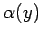

Wenn die Funktion (8.90) im Intervall definiert ist und die Funktion f(x,y) im Rechteck stetig ist und eine partielle Ableitung nach y besitzt, dann gilt bei beliebigem y im Intervall [c,e]
(8.92)
Man spricht vom Differenzieren unter dem Integralzeichen.
Beispiel
Für y>0 beliebig:
.
Probe: . Für y = 0 ist die Stetigkeitsbedingung nicht erfüllt, so daß hier keine Ableitung existiert.
2. Verallgemeinerung auf parameterabhängige Integrationsgrenzen:
Die Formel (8.92) kann verallgemeinert werden, wenn die Funktionen  und unter den gleichen Bedingungen, die für (8.92) gefordert werden, im Intervall [c,e] definiert, stetig und differenzierbar sind und wenn die Kurven das Rechteck nicht verlassen: